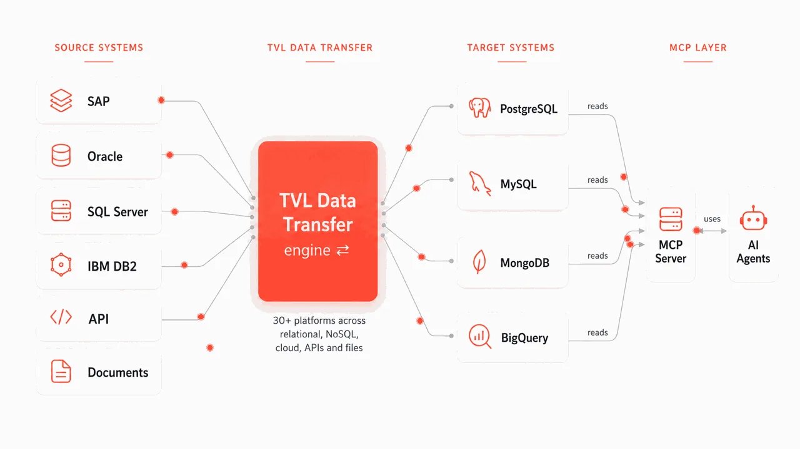

We build the Sovereign Data Layer for AI
We prepare enterprise data for AI, governed and ready.
Keep it sovereign when you need to, and run your AI wherever you choose.

AI needs your data. You set the rules.
Data is scattered across SAP, Oracle, Postgres, lakes and files. Every system is its own silo, raw and inconsistent, so your agents cannot safely rely on it.
Your data lives everywhere, in dozens of systems that were never designed to talk to each other.
It arrives raw and inconsistent, so agents built on top of it produce answers you cannot trust.
Where data lives and where AI runs stays your decision, free of vendor lock in.
The EU AI Act and GDPR require residency, auditability and lineage you can prove.
Sovereign when you need it
Sovereignty is a choice you architect. We build so data can stay in the EU or on premise, under your keys and in your jurisdiction, aligned with the EU AI Act, GDPR and Gaia-X.
You choose where data lives
EU regions, on premise, air gapped, or your own cloud. Your architecture and your decision, never forced into a single vendor's estate.
You hold the keys
The pipeline runs on infrastructure you control, in your jurisdiction, with the encryption keys in your hands. We operate it; the data and the keys stay yours.
Auditable, end to end
Every hop is logged and inspectable, for full lineage from source record to the answer an agent gives.
Capture, route and deliver, in the right order
A change data capture pipeline that never rewrites your applications and never scrapes whole tables.
Capture
Every insert, update and delete is picked up as it commits. It reads from the change stream (log based or trigger based, whichever fits) instead of scraping whole tables, and never rewrites your applications.
Route
Rules decide what goes where: by table, column, row or your own logic. In flight, data is filtered, mapped, masked, enriched and split or merged, with SQL lookups and scripted rules, so each target receives exactly the shape it needs.
Deliver
Changes are grouped into channels, batched and compressed, then applied in the correct transactional order. Traffic is throttled to protect the network, and every batch is tracked, so delivery resumes exactly where it stopped after an outage.
Enterprise sources into your data lake or warehouse
Land data in the target you choose: a data lake, a database or a warehouse such as BigQuery, Postgres, MySQL, Oracle, Splunk or Elasticsearch. One clean load of history, then a live feed, while your source systems keep running.
Log based or trigger based capture, whichever fits the source.
Your model arrives with keys, types and relationships intact.
One clean backfill, then a live change feed on top.
Ready for reporting and for your AI agents, right where you already work.
Three layers, from raw capture to business ready tables
Every layer lives in your own target system, versioned and auditable.
Raw, as it lands
Every source record captured exactly as it arrives, nothing lost. The immutable record of what happened.
Cleaned and conformed
Deduplicated, typed and joined into one consistent model across every source system.
Business ready
Aggregated, modelled tables that power reporting and the answers your AI agents give.
Built for complex, real world estates
Table level control: sync one table in one direction and another in both, inside the same pipeline. Pick the columns, rows and direction per table.
Every batch tracked, every row delivered
Peak sustained throughput
Measured on our own reference deployment, running continuously under production load.
Durable by default
Every batch is tracked in a transaction and retried through outages, so delivery resumes exactly where it stopped, with nothing dropped.
Scales horizontally
Parallel channels and clustered nodes move data fast, with proven deployments spanning thousands of nodes.
Agents that answer from data you can trust
Through an MCP server, your agents query the governed Gold tier: curated, business ready data that agents can rely on, so answers stay trustworthy and traceable. Run them in the US, the EU or on premise.
Answer across every system
Agents respond on live records unified from every source, always current.
Draft quotes, assign SAP codes
Draft quotes and assign SAP codes directly from prepared data, work that once needed a specialist.
Every answer traceable
Governed answers that trace back to real, prepared, auditable data, wherever your AI runs.
The same job, done three ways
In house or open source stack
Full control, though slow to build and demanding to run. You assemble the log readers, message bus and sink connectors yourself, and bidirectional sync, conflict resolution and lineage are all yours to engineer and maintain.
Single cloud service
Quick to launch, then hard to leave: it ties you to one cloud and one estate. Usually one directional, light on transformation, and often blind to SAP, Oracle and mainframe sources. Your data and keys live in the vendor's control plane.
Any source to any target
SAP, Oracle and DB2 included, bidirectional, hosted in the EU or on premise with your own keys. One layer lands the data, refines it across Bronze, Silver and Gold, and serves it to your AI agents, with auditable lineage end to end.
| Capability | In house / OSS stack | Single cloud service | TVL Data Transfer |
|---|---|---|---|
| EU, on premise or air gapped hosting | Partial | No | Yes |
| Customer held keys, in your jurisdiction | Partial | No | Yes |
| SAP · Oracle · DB2 sources | Partial | Partial | Yes |
| Bidirectional and multi primary sync | DIY | No | Yes |
| In flight transform, mask and routing | Partial | Partial | Yes |
| Bronze, Silver and Gold refinement | Partial | Partial | Yes |
| Governed Gold served to AI agents (MCP) | No | Emerging | Yes |
| Auditable lineage, end to end | Partial | Partial | Yes |
Proven for the European Commission
EBSI, for the European Commission
Our CTO designed and audited the smart contracts behind the EU's European Blockchain Services Infrastructure.
Enterprise scale
Our CEO scaled eMAG Marketplace to $1B ARR, and sits in the European Commission's AI Group of Practice.
Trusted & recognised
Trusted by DataDiggers and Romstal. NATO DIANA mentor and judge. A senior, international team in Luxembourg, Romania and the US.
Questions we hear most
Let's move your data
Tell us the two systems. We'll stand up a working pipeline on your own data in weeks, not quarters, as a scoped pilot, a framework contract or a managed service.
Book a 30-minute scoping call. Tell us the two systems and we'll take it from there.
Prefer email? Write to